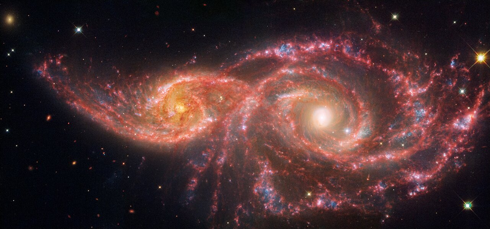

Barium stars are a class of spectral type G or K giant stars whose spectra display anomalously strong absorption lines of singly ionised barium (Ba II at λ455.4 nm) and other heavy elements produced by the slow neutron-capture process, together with enhanced carbon molecular bands. All known barium stars are members of binary systems: their chemical peculiarities arise not from their own nuclear burning but from past mass transfer from an asymptotic giant branch companion that has since evolved into a white dwarf.

ESA/Hubble & NASA, S. Eyres
The class was first identified by William P. Bidelman and Philip C. Keenan in 1951, who recognised a group of red giant stars with unusually strong Ba II, Sr II, and CH absorption features. The strength of the barium signature is quantified on the Warner scale from Ba1 (mildest) to Ba5 (strongest). The prototypical example is Zeta Capricorni (Ba2), a naked-eye star at magnitude 3.77 located roughly 386 light-years away, which orbits its unseen white dwarf companion with a period of 6.5 years and an orbital eccentricity of 0.25.
The s-Process and Nucleosynthesis
The heavy-element overabundances in barium stars are produced by the slow neutron-capture process (s-process), which synthesises approximately half of all atomic nuclei heavier than iron. In the s-process, seed nuclei — typically iron — capture neutrons sequentially, with beta decay occurring between captures on timescales of thousands of years. This process operates primarily in thermally pulsing asymptotic giant branch (AGB) stars, where neutrons are released by the 13C(α,n)16O and 22Ne(α,n)25Mg reactions. Three characteristic abundance peaks mark s-process production: the Sr/Y/Zr peak (mass number ~88), the Ba/La/Ce peak (~138), and the Pb/Bi peak (~208). Barium stars show enhancement of elements across the first two of these peaks, with typical spectroscopic enhancements of [Ba/Fe] = +0.3 to +2 dex in giant barium stars.
Binary Nature and Mass Transfer
The binary nature of barium stars was established observationally by McClure, Fletcher and Nemec in 1980, who found that nine of eleven strong barium stars showed periodic radial-velocity variations consistent with orbital motion. Subsequent monitoring confirmed that all barium stars — both giant and dwarf — reside in binary systems. The white dwarf companions were first detected directly through ultraviolet excess observed with the International Ultraviolet Explorer satellite.
The accepted mass-transfer scenario proceeds as follows. The present-day barium star was formerly a main-sequence star orbiting an AGB companion. During the AGB companion’s thermally-pulsing phase, its stellar wind — and in some systems Roche lobe overflow — deposited barium- and s-process-enriched surface material onto the companion, polluting its outer envelope. The AGB star subsequently shed its outer layers to become a white dwarf. The G/K giant star, having never evolved to the AGB itself, thus carries chemical signatures of its former companion’s nuclear burning. Orbital periods span a wide range from a few hundred days to approximately 500 years. White dwarf companion masses lie in the range 0.5–1.0 M⊙, with strong barium stars (Ba3–Ba5) tending toward more massive companions (0.6–0.9 M⊙) than mild barium stars.
Sub-types
Giant barium stars are the original and most numerous class: G–K giants with strong s-process overabundances, classified Ba1–Ba5 by the strength of the Ba II line at λ455.4 nm. Dwarf and subgiant barium stars are main-sequence F-to-G type stars polluted by an AGB companion; fewer than a dozen are confirmed. CH stars are metal-poor Population II counterparts of giant barium stars, characterised by anomalously strong CH molecular band features and similarly residing in binary systems with white dwarf companions. Subgiant CH stars, identified by Bond in 1974, are the low-metallicity counterparts of barium dwarfs. Yellow symbiotic barium stars are a subset of symbiotic binary systems in which the giant component displays barium star enrichment; some planetary nebula central stars also show carbon- and barium-enriched companions.
Additional s-process diagnostic lines used in barium star classification include Sr II at λ4077 Å and λ4215 Å, La II, Ce II, Nd II, Y II, and Zr II. Cooler, later-type barium stars can also show ZrO molecular bands, linking them to S-type stars. In modern spectroscopic surveys the selection criterion is typically [Ba/Fe] ≥ +0.25 dex. The largest homogeneous sample to date — 486 barium stars identified in the GALAH DR4 survey (2026) — reveals effective temperatures of 4,300–6,500 K and metallicities [Fe/H] ranging from approximately −1.2 to 0.0 dex, confirming that barium stars are predominantly thin- and thick-disk objects. Barium stars serve as fossil records of AGB nucleosynthesis across cosmic time, and are closely related to Ap and Bp stars as members of the broader family of chemically peculiar stars.